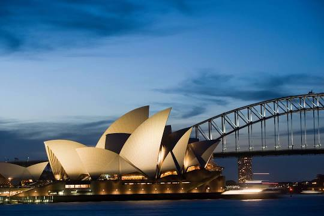
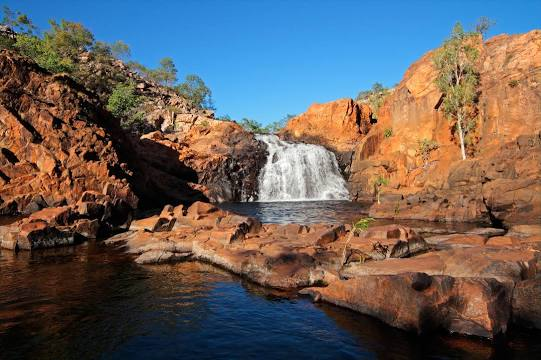

Opera House
Et av verdens mest ikoniske bygningene i hele verden som er Operahuset. Den er bygningsmessig et mesterverk som er unik for seg selv. Det er sted som har en del historie bak seg, som du også kan høre unike historier av hvis du går inn. Opera huset i Sydney er virkelig noe for seg. Uansett hvem du er så er det noe for noen.
Sydney Harbour Bridge

Sydney Harbour Bridge er broen som strekker seg fra sentrum i byen til north shore. Det er en bro som er kjent for sin skjønnhet og for gi vei til syklister, tog, biler og gående folk.
Kakadu National Park
Kakadu er en levende kulturell lanskape. Det har vært et hjem for aborginene i mer enn 65.000 år. Kakadu er en av de største parkene i Australia som dekker nesten 20.000 km. Det er sykt!